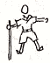
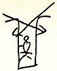
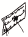

一 昭和十九年八月十九日着信
（東京都品川区大井出石町五〇五二 折口信夫先生（はがき）［＃改行］千葉県木更津郵便局気付 膽七八三八部隊玉井隊 藤井春洋）二 昭和十九年八月頃
（東京都品川区大井出石町五〇五二 折口信夫先生（はがき）［＃改行］横須賀郵便局気付ウノ二七 膽七八三八部隊玉井隊 藤井春洋）三 昭和十九年九月頃
（東京都品川区大井出石町五〇五二 折口信夫先生（封書）［＃改行］千葉県木更津郵便局気付 膽七八三八部隊玉井隊 藤井少尉）○そちらから通信を下さる時には
横須賀郵便局気付ウ二七
膽七八三八部隊 玉井隊
藤井少尉
として戴きます。千葉の方は、こちらからの便だけをもつてかへるが、そちらからはとゞきさうもないのです。これですと日がかゝりますが、ある程度の郵便物なら来るはずです。膽七八三八部隊 玉井隊
藤井少尉
○たつて来てから戦局がにはかにかはつて来たので内地はさぞかしひきしまつてゐることゝ思ひます。しかしこんなこともさう長くはつゞかぬことゝ確信しますから、また、はれ／″＼とした日々が来ることでせう。
○こちらにゐますと、却て自分の身近のみで一向に日々のうごきがわかりません。時々うはさの様にいろんなことを伝へて来るのみです。
○鈴木さんまだおかへりでないと思ひます。
○家の方も気にかゝりますが、あのまゝ若い人たちが来てくれてゐることだらうと思つてどうにか心をなぐさめてゐます。
○連れて来た兵士たちに、時に病人が出ると、これが一番身にしみます。内地ならばそんなこともないのですが。私は幸健康です。
○「たゞ岩をくだくのみが我がすべの如き日々をすぐなりたこの葉かげに」
○何にしても先生が健康でゐて下さることのみが願はれます。時々旅行のことなどを思ひ出してゐることもあります。
○それにしても、もつと生活の跡でも偲ばれるところだと私どもの様なものには何か考へたりする楽しみもあることでせうが、さうしたこともないので、空虚なことです。
○杏伯さんへはまだ便りしてありませんから、よろしく言つて下さい。
○うまさんのことも、どうなつたかと思つて気にかゝつてゐます。
○もし命あつてかへつた日には、御想像以上の生活ぶりをいろ／＼御話申しあげることでせう。
○そろ／＼月も冴えて来て、山のことが思ひ出されます。
○杏伯生国のことばなまりの兵と毎日話し合つてゐます。それから先生の方のものも……
○こんなところにゐると、やはり世間の様子が一番知りたいと思ひます。兵士たちでも、新聞などのにうすの様なものにはそれが数日前のものであつても目をすゑてのぞきこむことです。
○私のたつたあと、身近の誰彼がきつとたつてゐることゝ思ひます。
○歌もこの頃ぼつ／＼作る様におちついて来ましたが、さうした変化に富まず、刺戟にあつても同一感情なので結局まとまつて参りません。
○何にしても健康でゐて下さい。若い人たちによろしく。
四 昭和十九年九月頃
（東京都品川区大井出石町五〇五二 折口信夫先生（封書）［＃改行］神奈川県横須賀郵便局気付ウ二七 膽七八三八部隊玉井隊 藤井少尉）○さてといふと書くことがありません。はつきり書くことの出来ぬことばかり身辺にうろ／＼してゐるので。
○多分来てゐる場所など想像になつて、毎日の報導で心をいためてゐられることゝ思ひます。しかしこちらは案外おちついてゐます。まだ／＼われ／＼の出る幕ではありませんので。
○空襲などゝ言ふものは、準備さへしつかりしてゐて、穴深くさへ待避すれば、決して心配のいらぬものだといふことを御注意申しあげておきます。あの床下の穴が何よりです。
○本道にわれ／＼が日本人の力をふるひ立てる時は、東京あたりも相当不安な状態の時でせう。こんなことが決してあるはずがないと日本人である以上深い憑みを誰もが持つてゐることでせう。
○これからぼつ／＼断片的に思ひを書いてゆくことにします。さうでもしないとあまりにひつかゝりが多くて文章になりません。
○日のうつるにつれて、こゝで過した日のあまりにも移り変りなくあまりにも平凡な四方の様子なのにすつかり季節を忘れてゐた様に内地の秋めいて来てゐる様子を想ひ浮べることです。
○この頃しきりに旅行の思ひ出が身に沁みて来ます。人間どうにも自由のきかぬ時にこそ、真に昔を懐しむ心が出るものゝ様です。まだ内地にゐた時は、それを楽しんでゐたのですが、こゝではそれ等がすべて過去のかへらぬものといつた気がしてさびしまれるのです。
○琉球などでも今行けばあんなに楽しいところではなかつたでせう。しかしあれだけ広いといふことゝ、あれだけ古い人生のあることゝは、こんなあぢきない日々にも、何かのなごみがあつたでせうに。こゝでは殺風景なものです。人生は見えず、跡があつても新しい歴史しかもたないものといふものは、われ／＼の様な心のものにはさびしいことです。
○ねてもさめても銭一文費ふ手だてのない今日このごろ、財布はすつかり守り袋に変つてしまひました。これが、自在に使はれたらまだよいのにと考へることもあります。道ばたに一つ何があるではなし、たゞ与へられる食物を事務的に消化してゆくのみ。
○水にめぐまれぬといふことは、人間何より苦しいことだとこんどこそ身にしみてゐます。
○時々風の様に聞えて来る独乙の狭つて行く戦況などがしきりに皆の心をさびしがらせてゐます。東京には議会が初つてゐるとのこと、そんなあわたゞしい世の中の様子も真のものがわからないのでやはり兵士等などもとき／″＼やるせない気がするやうです。
○千葉と神奈川との両方の名宛は、一方千葉の方は空の便、外方船なのです。空の方は制限があるので勉めて返信を受けぬ様にと言ふのです。それでも押して出したものは既に返信を受けてゐます。横須賀の方は小包なども可能なのです。杏伯さんに頼んで読み物位の慰問をして貰ふことにしておきました。
○学校の方などもすつかり変つてしまつたことゝ思ひます。われ／＼の様に一つ任務にとびこむと批判も何もなくたゞなりゆくまゝの世の中の真実を知ることにあくせくしてゐます。
○世話をやいてゐてくれる若い人たちがやはりよくしてゐてくれることかどうかとそれのみが気にかゝります。心がくつたくするとすぐ先生の日頃ばかりが思はれてなりません。たゞこの為にのみは今一度やすらかな世のかへることが願はれてなりません。
○もつと人生のある大きな土地にでも行つてゐるのなら、何とか心のほぐれることもあるのではないかと思ひますが、これはあまりにも単調なことです。
○幾日たつても同じ太陽が同じ色どりの、あだん科のうは葉に明々と照つてゐるので、すつかり今年の夏は平凡にすぎて了ひました。
○鈴木さんもそろ／＼帰られたころかと思ひますが、よろしく申しあげて下さい。
○空に飛びたつた若人たちがふるひたつて敵をほふるまで、これを育てあげる責任者の方々が、果して自信たつぷりに戦してゐてくれるのかといふことが、気がかりになつて参ります。これこそ前線の皆がもつ不安ではなからうかと思ひます。
○ともかくも元気にゐて下さい。きつとまたお傍にゐてよい日をすごす時が来ることを念じてゐます。
○歌もぼつ／＼出来さうですが、どうも今までの気分ではこのつきつめたものを作りあげにくい様な気がします。
○国学院で教へた宮田君が、ほんとこの間任官して、同じところに来てゐます。まだ求めて会ひませんが。
春洋
五 昭和十九年九月頃
（東京都目黒区緑ヶ丘一二三二 高崎英雄様（封書）［＃改行］神奈川県横須賀郵便局気付ウ二七 膽七八三八部隊玉井隊 藤井少尉）○発信先の二種になつてゐるのは、木更津の方は空からもつて来るし、横須賀の方は海なのです。空からの方の多くなることは、運搬力を妨げるので、返信は横須賀の方でとる様にとのお達しなのです。私などはまだ一度も音信を受けないめぐまれぬ部類に入るものです。早いのは既に第一信を八月二十日に受けて、その返事が木更津を経て来てゐます。
○東京の変り様といふものは、われ／＼が出てからひどいことだらうと思ひます。それも風の様に或はずつと日のおくれた新聞などに見ては想像してゐます。
○暑い夏もすみがたになつて、夜冷えのころとなつたことでせう。いつ見ても来た時と同じ様な色どりの四方を眺めてゐると何だかほうとして日のうつるのが、もどかしくなつて来ます。
○たゞ心にふれてくるのは、先生のことゝその周囲の動きが、しきりに毎日感じられて来ます。東京もさぞさう／″＼しいことゝ思ひますが、空襲などゝ言ふものはもぐる穴さへしつかりしてゐたら、ほんと一時すぎればそれまでのことです。こんなことも先生はじめ皆様に御注意申しあげたい。
○どうにも心のやりどころのないさびしさは遠ざかつてゐて正確な世の中の見えぬことゝ、先生の御身辺の様子の知られないことです。これさへ自由に聞くことが出来たらとさびしんでゐます。
○はりあひのない日々なので、歌もなか／＼思ふ様に出て来ぬものです。あまりに変化が少いので。
○それでも時々かうしてゐることが、現在のわれ／＼の任務なのだからと思つて心ひそめてはゐます。
○水の自由にならぬといふことがどんなに人間にはさびしいことかといふことも、こんどほど身にしみたことはありません。
○私の出たあと、身近なもつと／＼いろ／＼な人々が出たことでせう。
○あれやこれや思つては心をなぐさめてはゐます。煙草をあけてもかびてゐるし、それも少いことだし、青ものゝ種を蒔いてもすぐ生えてすぐ枯れて行くといつたはかなさ。こんなくらしをしてゐると内地の兵営が思ひ出されます。
○とりふねの連中も若い者たちには歌の感情が、自分の心としつくり来ない様な気がすると思ひます。こゝまで来ると、「なりけり」といつたもの言ひがなか／＼出て来ぬのです。それもまだ自分の心に戦つてゐるのだといふあせり心があつて余裕が出て来ぬのだと思ふのです。
○戦局がもつとしつくりきまつて我が行くてが明らかになつて来るともつと日本人としての深い自覚の出て来ることゝ思ひます。
○月のすつかり冴えた草生に兵士の中に坐つて談し合つてゐると、しきりに先生のことが目をかすめるのです。あなたでも様子をお知らせ下さい。
○幸にまだ病気にはなりません。が相当にこれ難行です。あなた方の想像はきつとあたりません。命あつて帰つたなら、そんなものかといふ話をお聞かせ出来ることゝ思ひます。
○自由な物言ひをすると防諜にふれるので何にも書けませんし、歌などもさうなのです。これがすつかり過去にでもなりきることがあればと考へてゐます。
○何一つ現地では手に入らぬのです。びた一文の金も不用な訣で財布は金を出してお守り入れに変つて了うた次第です。
○何より身に関する報導が知りたいのがこゝにゐる皆の感情でせう。
○小包位は来るのですから、先生と共同で時々慰問して下さい。
春洋
六 昭和十九年九月下旬
（東京都品川区大井出石町五〇五二 折口信夫先生（絵はがき）［＃改行］横須賀郵便局気付ウ二七 膽七八三八部隊玉井隊 藤井春洋）七 昭和十九年十月中旬
（東京都品川区大井出石町五〇五二 折口信夫先生（封書）［＃改行］横須賀郵便局気付ウ二七 膽七八三八部隊玉井隊 藤井少尉）○こちらの発信は日に制限がありまして、月に二回、私どもは十五日と月末といふことになつてゐます。
○杏伯さんの手紙で大阪のおばさまの亡くなられたことを知り驚きました。せめて今少しいきて居られて静かな世の中になつてなくなられて下さればとそれがくやまれます。これと一所におくやみ申しあげておきました。
○先生の出羽の旅や箱根伊豆ゆきなども知らせてくれまして、やはりうれしく思ひました。どうしてゐられるやらと思ふと何だか気がつまつて来ますのに、かうして日日達者においでのことが訣ると生きがひを感じます。どうぞからだには十分御注意下さい。こればかりが気がゝりであると同時に私の楽しみなのですから。
○この月柳田先生の為の講演に支那へゆかれる様なことも書いてありましたが、あまり無理な旅行はいつも申しあげることですが、からだを考へてさしひかへる様にしていたゞきたいと思ひます。
○二人の処女たち相変らずゐてくれる様子、ほつとさせられました。これも私にとつては、先生の日常の為にありがたいことの一つなので、どうにかして大きな変化のない様にとそればかり祈つてゐることです。
○かうして海の第一線、しかも東京の第一線に来てゐるとちよつとしたことが国家とか民族とかいふ観念とふれあつては身にしみて来ます。
○私の来てゐるところなどは、とつくに御想像ついてゐるものと思つて居ましたら、杏伯さんなどはまだあそこかこゝかと考へこんでゐる様子です。
○永原鉦斎翁の話を牛島さん流に方角など無茶苦茶にして考へて下されば、はゝんといふことになるのですが。蓑着た鬼が今一つ先まで来すぎてしまつた訣です。
○この二・三日秋めいた風で何だか急に内地のことが思はれて来ました。それにつけても海のいくさのはな／″＼しい戦果が何とかして早く聞けないものかとそればかりがまたれます。
○ 秋風やあだにの空に月を吹く 春
故郷自慢のつきぬ草原 兵
たちてよりさびしの庭や萩も散る 迢
うきねの牀をどことさだめむ 杏
いわうとうすれど口なし鵠にでも聞け 春
杏伯さんこの頃めつきり弱つてしまつた様子ですが、これも何とかもとの世の楽しさかへるまで元気でゐてほしいものです。
○銭はもつてゐても使ふことを忘れてしまつた様な生活。人間これもさびしいことです。それについて多分この九月から私の本給料、品川原町郵便局払でそちらへゆくはずです。これは自由にしていたゞきます。こちらでもそれ以上のものをもらつてゐるのですが、それが一銭もどうにもならぬのです。これでは、かへりには大金持になることでせう。
○いつものことですが、琉球などゝ比べてまだ／＼水の乏しいところで、これには閉口です。たゞ東京に近いだけが気分の上からでもあちらよりは先生の近くにゐるのだといふ気がふかくして何となしになごむこともあります。
○こんな地方生活のないところへ来てゐると、一層からだの健康といふことが考へさせられます。いくさがこちらに迫つて来れば仕方もないことですが、さもないかぎり健康でさへあればとそればかり気をつけてゐます。幸、今のところ人なみに元気にやつてゐます。それだけは御安心下さい。
○飛んで来る飛行機など見てゐると一度位こんなに簡単にかへつて見たいといふ気にならされます。
○鴉も雀も久しく見たことなし。たゞゐるものは目白ばかり、これとほとゝぎすに似たかつをどりが飛びかはしては、ほんのほとゝぎすの様な声を出すので、別にこれもゐるのではないかと思はれてなりません。うぐひすといふものはどこへ行つてもゐるものらしくこの頃しきりになきます。
○今までゐなかつたとんぼが、数知れぬ蝿をとるためか、これもこの頃しきりにとんでゐます。四囲の色はいつ見てもあだに科の青々としたことです。これでは四季も何も感じられません。
○かうしてゐると、新聞週報など、それがどんなに古からうと、皆心のよりどころをつくる為にしみ／″＼と読んでゐます。それだけいろ／＼のことに遠ざかり、しかも何をか待ち心にならされてゐるのだと思ひます。
○そろ／＼太平洋の敵の反撃もにぶつて来、あちらの、西部戦線も思ふにまかせぬ状態になつて来るのではないかと思ひます。これからまたはな／″＼しい戦果が聞かれることかとそればかりを考へて勇みたつてゐます。
○そのうち野戦郵便局でも開かれゝば皆兵士たちはこの間に合はぬ銭でも送ることが楽しみの一つになることでせう。
○米之さんの住所を知らぬので、うち気付で出しておきました。
○吉野君にも一度便りしたいと思つてゐますが、これもどこへ出してよいやらわかりませんのでそのまゝになつてゐます。来た時にでもよろしく言つておいて下さい。
○二人の若人たち、ゐてくれてほんとにほつとしました。箱根の感想でも聞かしてほしいものです。どうぞくれ／″＼もお世話頼みますといつてゐると申し伝へて下さい。
○四五日あれてゐた風も静まつてまたもとの太陽が照り出しました。
○鈴木さんもすでにかへられたことゝ思ひますが、どうしてゐられることやらといろ／＼考へてゐます。
○此頃暇々に俳諧をよんでゐます。夜になるとすつかり何ごとも無駄な闇が来て、とても待ち遠い時間がやつて来ます。昼のうちに少しづゝ読んでゐます。こんなものに興味のある人は案外少いもので話相手にもなりません。幸、軍医さんで一人本をかりてゆく様な人がゐます。
○こちらもこちらですが、内地もさぞ物乏しいことゝ思ひます。どうぞこんな時にこそ一番からだをおいとひ下さい。それが何だか気になつてなりません。
○しまつゆくさ、ひでり草、大谷わたりの芽なども食用に供せられることです。しかしそれもたちまちかげをひそめませう。
○朝夕めつきり冷えて来て、やゝ秋らしさを感じさせます。月もそろ／＼おそくなつて夜闇のながさをしみ／″＼感じます。
○ねてもさめても同一感情の連続です。これでは、歌もなか／＼ものになりません。月末までには何とかまとめたいと思ひます。そのうへ、表現上いろ／＼制限されてしまふので、真のものが出て来ません。そのうち精進するつもりです。
○少しづゝ思ひ出しては毎日書きたして来たので、とりとめなくなつてしまひました。
○時々河合先生のところへも顔を出されて、からだに気をつけて下さい。
○この冬などが真にさしせまつた気持ちの正月を内地でも迎へられることゝ思ひます。何とかして民族のために、こんな時期の早くたちゆくことをとそればかり願ふ心です。それにしても敵をうつ手段の早くはな／″＼しく現れて来てくれることが待たれます。
○こんなところにゐる感情と、内地の人々の感情とでは相当に隔りがあることゝ思ひます。もつとあり／＼と世の移りゆく様子が見聞き出来ぬことかと、そんなことを誰もが考へてゐることでせう。
○大捷でもして、幸に平和にかへることでも近ければ、それこそいろ／＼な思ひ出話もあることでせう。どうぞそれを待つて皆様無事にゐて下さい。殊に痔などには気をつけて下さい。こんなに栄養乏しい世になると、なか／＼恢復がむつかしくなつて来ます。
○米千さんにでも頼んで、先生の周囲の様を知らせて頂きたいものです。木更津の方なら案外早く手に入るのです。
○こんどはこれでやめます。若い処女たちにくれ／″＼もよろしくとお伝へ願ひます。
○では、私のことは御安心下さい。
○この手紙出さうとしてゐたら、杏伯さんの十月八日付、東京病院からの第二信を受けました。これもやはり木更津局気付のものです。その外はまだおくれてゐるのか一向に手に入りません。
○杏伯さんも大変のことです。折角養生して何とかして、今一度顔を見たいと思ひます。気をつける様に言つてやつて下さい。
○「鵠が音」のことについて、大演習の歌の年次を言つて来ましたが、これは昭和八年です。浜松風、これはわかりません。
原稿は大躰年次順にしてあつて、正月歳暮の歌を区切りに一年の区別がたつはずです。選集でいふと、譬へば第十集は何年十一月頃まで、そして十二月中位は次の選集に入つてゐるはずです。そして選集の方は、技工してありますから、配列は不順です。やはり手帳の方が年次を見る為には正しい訣です。どうぞよろしくお願ひします。
○やはり通信は木更津のものだけが早く来る様です。
○杏伯さんのことを聞いて、先生の痔のことも気になつて来ます。長途の義務的な旅行などは、この為にでも、出来るだけひかへて下さい。この頃の様に栄養品不足の時にひよつとのことでもあると、しみ／″＼と看てくれる人もないと思ひますから、この点どうぞ気をつけて、達者にゐて頂きます。
○慰問品もよいですが、食料品などは腐敗もありますし、却て内地の方が少いはずですから御心配下さらぬ様に。こんな状態でなか／＼手に入らぬのですから折角の志が無になつてしまふのですから。
送つて頂けるならやはり読み物でも時々お願ひします。これも持つて来た俳諧が終れば万葉、日本紀などのこつてゐますから、そんなに無聊でもありません。たゞ世間の見渡しのつく様なもの又は軽いもの等をお願ひします。
◎いろんなものを送つてもらふといふことよりは、通信が何よりです。決して食物や大切な本などはやめて下さい。
○中村さん来る様ですが、これは心強いことです。たゞ今迄世話してくれてゐる処女たちにやはりもとの様な気分でゐてもらふ様これはどうぞよろしくお願ひします。うちはやはり女手のないことには、炊事に事を欠く訣ですからどうぞその点お気をつけ下さつて、折合ひよくお願ひします。それにしても杏伯さんの不幸と同時に中村さんの来てくれることは、うちの為にもとりふねなどの為にもよかつたと思ひます。
○早寝と適当な運動といふことにはくれ／″＼も御気をつけて下さい。
○私の方は無事にしかも達者に暮してゐます。この方は御安心下さい。
○歌の方は少しづゝは作つてゐますが、どうも言ふまゝの表現では、今のところ通信出来ません。防諜といつたことをも考へますので。そのうちさしさはりないものでも作つて見たいと心がけてゐます。
○せめても処女たちを相手に家庭内はゆたかさを保つて、中村さんの度を越さぬほがらか味を入れた御生活でこゝしばらくは気を晴らして達者にゐて頂きます。
○通信はやはり木更津でないと早く入手せぬ様です。殊に冬海の荒れて来ることも考へられますので。
では今日はこれで失礼します。達者にゐて頂きます。
八 昭和十九年十月下旬
（東京都品川区大井出石町五〇五二 折口信夫先生（封書）［＃改行］横須賀郵便局気付ウ二七 膽七八三八部隊玉井隊 藤井少尉）○台湾の戦果にひきつゞいて、比島の戦局が聞えて来てゐます。こちらなどもかうなると、活気づいた気分が出て参ります。
○その上最近雨のめぐみがあつて、ゆたかな気分で兵士らも働きつゞけるのです。
○殺生石を一度通つた様な涌湯では、どうもたまらぬのです。やはりほとゝぎすらしく時々鳴きたてゝすぎます。最近島でも森林地帯を歩いて、やうやう秋らしい色彩を感じたことです。さう言ふと、風の色、夜冷え、この点では相当秋をおぼえます。
○野戦郵便局がこんど出来たので、こちらで貰ふ増給も一銭も使へぬのですから、最近送りますから御承知おき下さい。多分電報為替の取り扱ひになるはずです。そんなものが行つても驚かぬ様にして頂きます。これでふくれあがつた財布も軽くなることです。
○八・九月ころの便りを見ると、内地はあちこち相当戦争といふことの身にしみるほどの忙しさのあつたことを感じさせられてゐます。
○物のつましくなつたこともいろ／＼聞かされますが、先生もさぞお困りのことゝ思ひます。
○毎日少しづゝ書きたしてゐるうちに、今日二十四日に先生の九月十八日のもの、兄の九月二日のもの、隣組の十月十六日（千葉経由）のもの、それから兵の家から二通、この五通一度にとゞきました。それで書くことがあとさきになるかも知れません。
○夕方兵が汲みあげて来てくれる磯のいづる湯の温みに身をすゝぐのが何よりのたのしみです。
○時々空の唸りを聞かされますが、こんなものは、注意さへしてゐると何のこともないことです。この上にも立派な戦果のとよみ来ることが待たれます。
○ 熱沙の上に一日を疲れいねし夜を空に星深くすみにけるかも
砂浜に砂をもりたる墓ありて、○○○○の穴近く照る
幕舎近○○○の残骸ありてこのきびしさの夜々を身にしむ
まざ／＼と地上に崩えし○○○のおびたゞしきに心うたれつ
たゞ岩をくだくのみが我がすべの如き日々をすぐすなりたこの葉かげに
かつ／″＼も四日の夜すぎて有明の月のあかりに島見え来たる
身に近き○の動きをさへに聞きがたく水青草のなきに苦しむ
宵々に月はしづかにのぼるなりたこの葉
朝つひに命絶えたる兵一人木蔭にすゑて日中をさびしき
ぬかづけばさびしかりけりたこかげの莚の下になきがらを据う
壕の底に地ひゞき深くつゞくなり。今か○○の爆撃はすぐ
壕ふかく○○の音を聞きわけ居り、せむすべもなき地上部隊我等
すみやかに中部太平洋の戦線のしるき戦果の聞え来よかし
島の上に照る日きびしき日ごろなり夏すでにすぎぬと思ふむなしさ
あまりにも月明ければ草の上にまだ寝にゆかぬ兵と談るも
島の森林地帯に入り立ちて秋をぞおぼゆ紅き乾そり葉
搬船を日ねもす守り海にうく駆逐艦見れば涙ぐましも
岩の間の涌湯を浴みてしづ心○○もしばし来ねかしと思ふ
○にむきて石をつみたる兵の墓照りしむ海にひつそり対す
たへ／＼て○に対峙す。身はやせて命たえたる兵をさびしむ
一くきの花をたむけてしづかなる昼をかへりぬ兵の墓より
あけ一時蝿のうなりのいちじるく頭上をうづめ黒々のぼる
こんなものが次々出来て来てゐるのですが、ほんのすけつちです。これから手を入れて実感に近づけたいと思ひます。そのうへ、これと思ふものは、こゝに書くことのちよつと出来にくいものが多いのです。
○そろ／＼感情のおちつきを得たので、本道のものが出て来るのではないかと楽しんでゐます。
○おばさまの死、先生のおたよりではじめて様子がわかつて、こんなさびしい死をなされねばならぬはずではなかつたのにとしみ／″＼思はれてなりません。しかし長くやまれなかつたことこそせめてもの心やすめに思はれます。こんな世の中でさへなければと考へられます。
○それにしても出来るだけお身の健康といふことに気をつけて下さい。私の様なところへ来るとそれが尚身にしみるのです。物をかむのとかまぬのとで下痢するのとせぬのとが別れるなどは、とてもでりけいとな関係だと思つて、このごろ兵にも深く注意してゐる位です。
○夜あけ少し前、まだ蝿のさわがぬ先に厠に、それも木かげの草原ですが、ゐるとさすがに、夜冷えした朝風が、まだ青々した草原を吹きわたるのです。この時が私にとつて一番しづかな心おちつきを得る時です。
島の朝け霜月近く青草原さすがに冷えて風ふき渡る
島人ののこしてゆきし鶏の暁に鳴きて家をこはしむ
明けて来るあだにの空の朝雲のしづけき見れば人し思ほゆ
をち方のあけ暗がりに飛行機のえんじん高く鳴りはじめたり
おのも／＼いでゝたゝかふますらをのうへを告げ来る文のきびしさ
あけ一時空をうづむる蝿のうなりのはげしきにも今は馴れむとするも
たこの葉の葉末にならぶつぶら蝿夕たつ風にゆれてゐる見ゆ
をちこちの幕舎はおきて点呼の声ひと時聞え明り来むとす
島人ののこしてゆきし鶏の暁に鳴きて家をこはしむ
明けて来るあだにの空の朝雲のしづけき見れば人し思ほゆ
をち方のあけ暗がりに飛行機のえんじん高く鳴りはじめたり
おのも／＼いでゝたゝかふますらをのうへを告げ来る文のきびしさ
あけ一時空をうづむる蝿のうなりのはげしきにも今は馴れむとするも
たこの葉の葉末にならぶつぶら蝿夕たつ風にゆれてゐる見ゆ
をちこちの幕舎はおきて点呼の声ひと時聞え明り来むとす
○今日はこれでやめておきます。二人の若人たちにくれ／″＼もよろしくとお伝へ下さい。つぎ／＼伝へ来る戦果を楽しみに、尚ひきしまつた外地生活をつゞけます。
○どうぞ、健康第一の御生活くれ／″＼も御願ひ致します。
九 昭和十九年十一月中旬
（東京都品川区大井出石町五〇五二 折口信夫先生（封書）［＃改行］横須賀郵便局気付ウ二七 膽七八三八部隊玉井隊 藤井少尉）○それから、驚かれるかと思ひましたが、持つてゐるのに困りますので、百円あまり手もとに残して、十月二十八日にお金を六百円送つておきました。御自由に処置して頂きます。この後も、二・三ヶ月づゝためては送ることに致します。銭のいらぬくらしは、さびしいものですが、このごろやつとなれて来ました。
○私のからだの現状をはつきり申しあげておかぬと無駄な心配なされてもと思ひますから申しあげておきます。最近内還になつた矢部健治といふ者（私の小隊の伍長だつたもの）がひよつとすると電話することもあると思ひます。今までの私の経た様子を申しあげます。上陸以来達者だつたのですが、九月十四日に発熱臥床。三十九度位の熱が十日間ほどつゞきました。そして九月中臥床して、十月一日に離床。それから、十日間養生して十月十五日ころからすつかりもとのからだになりました。病気はぱらちぶすです。
そしてそれ以来、上陸当時よりももつと健康になつて来て、今では私の小隊で、一番食事を多く食べる兵位の食欲をもつて来ました。こんなところへ来て小隊長殿は肥えられたと、兵に笑はれる位です。矢部には、十月八日に別れたきり会ひませんので、ひよつとするとこの病気のことをまだなほつてゐぬ様に言ふかも知れませんが、どうぞ御心配なさらぬ様に。
○今日もこれから土木監督の様に現場に出かけるところです。十一月も半近くなりました。東京近くの秋色も思ひ出される頃になりました。私はまだこんな姿で毎日元気に歩き廻つてゐます。
○それでも波の音が次第に高まつてどうやら秋めいた感じがふかくなつて来ました。夜なども来た時よりはずつと冷えて参りました。地上の草は、いつも変らず青々として生ひ変り／＼してゐます。
○兵の蒔いた南瓜がたつた一本大きくなつて、三つほど実を結んだのを、まだ若いながら、昨日兵が煮てくれて、とても鮮しい味を久々で味はふことが出来ました。大根などを蒔いてもつまみ菜程度にしかならぬので、若いのをとつては、時々お汁に浮かしてくれます。
○先生時々痔が悪くなられる様子、どうぞ気をつけて下さい。やはり長い乗り物などが一番悪いのでせうから、出来るだけそんなことはさしひかへて頂きます。
○大本営六日（？）の発表に、いよ／＼さいぱんの空襲を初めたことがあり、その戦果が告げられました。
つぎ／＼暗をたちつゝ爆音の遠ざかりゆくが涙ぐましき
この機みな全くかへれよ。螢火のとほぞく暗をうちまもり居り
爆撃機 朝の光りにとゞろきて、かへりつぐなり 島の空高く
この機みな全くかへれよ。螢火のとほぞく暗をうちまもり居り
爆撃機 朝の光りにとゞろきて、かへりつぐなり 島の空高く
こんなものがぼつ／＼出来てゐます。戦局もどうなることか、今が一番大事な時の様に感じられます。併しかうして一局部にたてこもつてゐると、それが正しくまとまつて来ぬのがさびしまれることです。
○乾燥した野菜では、かぼちや、馬鈴薯、葱等が一番もとの味を失はぬものだといふことを知りました。併し青ものにはかなひません。毎日の様に兵のとつて来る雑草の方が味よくいたゞけるところを考へると箱根などではもつと考へる余地がありさうです。
○那覇は大変なことでした。あそここゝと思ひ浮べては、想像してゐます。私どものゐるところでは、そんなことがあつても結果は大したことはありませんが、那覇の様に市街といふものはどうにもなりません。それにしても穴が必要になつて来ます。こんな時にはひる場所さへしつかりしてゐれば何のこともないのです。
○こゝでは琉球のあしやげの様な小さなものを四囲をかこつたのが、私たちの住居です。そこに兵の作つてくれたしもと机もちやんと据てゐます。別にこんな時の穴ももつてゐます。
○凄じい人工の嵐がやつて来ても、それだけの準備をしてゐるので大した驚きもありません。もぐらもちの様にしばらくひきこもつては、日の光りに出て来ると、ほつとした、そして何とも言はれぬ静かさでおちついて来ます。今日などもその朝けなのです。
○もう霜月も上旬を昨日終つたのにちつともそんな気がいたしません。今そのあだんのかげのあしやげのうらに鶯がしきりに鳴いてゐます。
○どうぞくれ／″＼もからだに気をつけて下さい。今日はこれで筆をとめます。
○中村さんによろしく。鈴木さんは東京のどこにゐられるのかわからぬのでまだ便りしません。
一〇 昭和十九年十一月下旬
（東京都品川区大井出石町五〇五二 折口信夫先生（封書）［＃改行］横須賀郵便局気付ウ二七 膽七八三八部隊玉井隊 藤井少尉）○あの記事ほどのところではありません。住民のゐた時にはもつとよかつたのかも知れませんが、今では私どもばかり、どちらを見ても殺風景なものです。併しあれはよく記録してありました。
○十六日夜、先生からの新聞、杏伯さんの手紙、兄の手紙をいたゞきました。谷口さんがなくなられた様ですが、多分おなじ海かと思ひますが。別におくやみ申しませんから、よろしく申しあげておいて下さい。あんなに自由なくらしをして居られたのに、誰も彼もが、随分変つてゆくことです。
○最近東京も時々Ｂ29の来襲がある様ですが、どうぞお気をつけて下さい。敵機は爆弾の外に機銃をよくつかひますから、無蓋のものに退避することは、この点あぶないのです。それに爆風といふのは相当ひどいものです。だから、頭のすぐ地面に接する様な穴や直接風の入る穴などは、よく考へねばなりません。それに、どかんと大きな穴をあけるものゝ外に、大した穴もあけないで、細かな破片を相当大きな範囲に散らすしくみのものなどありますから、どちらにしても、出来るだけ深い穴へはひる必要があります。そして出来れば蓋があれば尚よい訣です。しかし深ければこんな風になりますので、蓋がなくてもある程度は安全な訣です。
これだけのことは是非常識として知つておく必要があります。どのみち東京なども、ねらつてゐるのでせうから。
○毎日黒々と焼けた手足をぬつと出してすてつきを一本さげては、兵の為事の指示をしに出かけてゐますと、暇がある様で、明りのうちがすぐ経つて行くので、本を読む暇が思つたほどないのです。併しかうして送つて頂くとやはり楽しみに少しづゝ読みすゝむことです。新聞は今よみ了へて兵の方へ廻したところです。
○時々夜など編み草の壁の間を通る風が寒々と感じられるほどの秋模様になつて来ましたが、やはり日中は、夏です。青々としたものです。
○箱根の管理料といふのは、しばらく四十円でしたが、昨年から五十円にしたのです。
○今日は先生の長い手紙を読みながら書いてゐます。第二回の小包が十八日夜入手したので、書き出しました。手紙は暗がりにむさぼり読んで今一度読みかへしてゐます。この小包と一緒に兄から干物とめたぽりんの注射液を送つてくれました。頼みもせぬのにやはり気にかゝると見えます。有難いことです。
○月給は多分三ヶ月分位まとめてゆくことゝ思ひます。本月末か十二月かにゆくはずです。ゆくまで棄てゝおいて結構です。多分原郵便局で受けとることになります。
○吉野の利子さんからも、この手紙を書いてゐる時に、又兄の便りと同時に、初めての便りを三河島の家からくれました。これにはす直に自分が、私にあれだけ先生の家に留守中入つてくれといはれてゐながら、それもようせず、自家の忙しさの為に一人三河島にとりのこされてゐるのが済まぬといふことゝ、先生のことは出来るだけお世話しますから安心してくれといつた意味の便りをくれました。とてもす直に書いてありましたし、大きく正しい点から物を考へてゐる点感心です。
○それにしましても、出発当時話してゐた様なことで、若い者を束縛しておくこともないと思ひます。それに私などと年も隔りすぎてゐるのだし、家とすれば新しく浩さんゐてくれゝば、私が利子さんにゐてもらふ様に考へた原因の先生の暮しの為といふ点は心配いらぬ訣ですから、この件は自由になりゆきにまかせて頂きます。浩さんのゐてくれる以上これを強く言ひ出すのは、私の為といふことが勝ちすぎて結局何の為のことかわからぬ様になることゝ思ひます故。
○もらつた便りの返事はこちらからしておくつもりです。
○「鵠が音」のこと、ありがたうございます。われ／＼の様なものゝ歌集が、この時代に出ることさへ有難いのに、それがすつかり先生の手で作つて頂けることをしづかに考へたりしてゐます。
○小包二回とも無事ついて、それから週報も同時に頂きました。
羊羹また入つてゐたのでおどろきかつ、これが家にある全部なのにと思ふと何だかあまりにもつたいなくて送りかへして食べて頂きたい気がしました。大事にして心からいたゞきます。
羽黒のものも珍らしく頂きました。
併しこれからはかうしたものはいりません。こちらの方が却て時々は甘味の配給もあつて内地よりは十分なのですから。
○扇面、これも読んでは有難いと思つてゐますが草屋の中ではしまつておくのに困りますのです。さうかといつてかけてながめる風流もまだ出て参りません。
○お茶は時々いたゞいてゐます。やはり香茶ばかりなので時々かをりを楽しむことが出来ます。これももうそちらの全部かと思ひます。
○げら刷りは、財産の一つとしてぼつ／＼楽しみにいたします。その他の書物もこれから少しづゝ楽しめます。
○週報や新聞、これは読んだあとを回覧させますので一番役立つてゐます。
○どちらにしても、もう家でも尊いものは、あまり送らないで下さい。どうも心がをさまりません。
○栗、こんどは味も変らず、又兵の方にも送つて来ますのでもつて来てくれて、あちらでもこちらでもぼり／＼音をたてゝゐます。
○煙草は、どうも谷口さんの戦死を考へると身にしみて来ます。しかしこれは先生の生活には不必要なものだけに気安くいたゞけさうです。
○いろんな人々の集合してゐることゝて、稀には、おいしい饅頭なども配給されることです。最近では新嘗祭の日にいたゞきました。こんな風ですから、どうぞあまり食物のことなど心配なさらずにおいて下さい。
○島の概況を役場の書記の綴つたものを読んでゐましたら、宗教のところに、「神道トシテハ天理教アリテ毎月一回参集礼拝ヲ施行ス、コノ指導者ハ北川百次郎トス、又迷信的青ガ島新神ヲ信ズルモノアリテ同島出身ノ婦女ニシテ巫女ニ類スルコトヲナスモノ比較的多シト云フ」など書いてあるところがかつ／″＼私などの目をひくだけであとは殺風景な記録にすぎません。
○この書き物の結びに、「日米郵便飛行機ハ何レ太平洋横断ノ時代実現セラルベシ其ノトキハ本島ハ大中継所トシテ最モ好適ノ土地ト思料セラル」とあるのなど印象深く心にのこりました。
○羽黒の神主さんからも手紙来ました。相変らず呑気な模様です。あんなところで大勢を見下してゐるのがこの頃では一番しづかなよい暮しになつた様です。
○杏伯さん達者になつた様で結構でした。やはりあまりに近いものが病気だと聞かされると、殊に先生の廻りを少しでも賑はしてゐてくれたのがと思ふとさびしかつたのですが、よかつたと思ひます。
○今日はまた、一昨日東京の爆撃された報導があつて驚いてゐます。非常な上空からだといふことを聞いて、見当つけぬ弾だけに尚更案じられます。われ／＼の様な用意をしてゐれば空襲位は日ぐせの様になつて感じられますが、さぞ驚かれたことゝ思ひます。それにしても御注意下されて、前に書いた様な要領で待避を必ず実行して頂きたいと思ひます。
○やつとめぐみの雨が今朝から降り出して喜んでゐます。
○昨日は新聞十月二十三日から十一月三日までのと、十一月十四日から十七日までのをいたゞきました。外に杏伯さんから「中部日本」を送つてくれました。今これを読み了へて兵に回覧させたところです。
○いよ／＼東京に迫つて来ては、どうにかこの一戦の大勝に終るまでには、こんどはもつと大きな爆弾の空襲のあることも考へねばなりませんが、どうぞ気をつけて下さい。
田はすでに緑だちたり。国土を我がいでゆかむ時の明るさ
いでたちの時いたりつゝ常の如朝餉に坐る宿人にむかひ
すこやかにゆきてかへれよとのらすこゑ朝目すがしく聞かむとすなり
たちむかひ我がゆかむ道のはろけきを旅の如くに思ひほけ居り
すこやかにいませと言ひて壮心をふりおこしつゝ別れ来にけり
坐つゝむかふ庭はさびしくいませども日なかをあぐる処女らのこゑ
ひとりゐの師をさびしみていなむとする庭にはなやぐ処女らのこゑ
いでたちの我口をますと処女らが心つくせし夕餉をもたしも
さ夜ふかくいとま申して来たりけりなほ明しつゝおきていまさむ
国のためよき死をなせるたけをらが魂ぞ思ほゆる我がいでたちに
師はひとりしづかにいます庭萩も今はおほかた散りはてぬらし
処女らが二人やさしくもる家にわが師はひとりしづかにいます
萩の花咲くべくなりて来む秋もまさきくいませ心しづけく
健康をつゝしみたまへ勝ちさびに勝ちとよもしてわがかへるまで
たぎり来む心しづめて朝よひにまさきくいませわが幸のため
南の洋のとなかにみ軍のかちとゞろく時我がかへりなり
いでたちしのちむなしからむ師の家にかしづききよき処女をたのむ
師がみまへはろかにさかり大君の猛きみいくさと我はたち来ぬ
さびしけく師がもる家の処女らのよきかしづきをたのむなりけり
朝闇の草原にいでゝ吹く風を秋づきたりと言へどさびしき
いでたちの時いたりつゝ常の如朝餉に坐る宿人にむかひ
すこやかにゆきてかへれよとのらすこゑ朝目すがしく聞かむとすなり
たちむかひ我がゆかむ道のはろけきを旅の如くに思ひほけ居り
すこやかにいませと言ひて壮心をふりおこしつゝ別れ来にけり
坐つゝむかふ庭はさびしくいませども日なかをあぐる処女らのこゑ
ひとりゐの師をさびしみていなむとする庭にはなやぐ処女らのこゑ
いでたちの我口をますと処女らが心つくせし夕餉をもたしも
さ夜ふかくいとま申して来たりけりなほ明しつゝおきていまさむ
国のためよき死をなせるたけをらが魂ぞ思ほゆる我がいでたちに
師はひとりしづかにいます庭萩も今はおほかた散りはてぬらし
処女らが二人やさしくもる家にわが師はひとりしづかにいます
萩の花咲くべくなりて来む秋もまさきくいませ心しづけく
健康をつゝしみたまへ勝ちさびに勝ちとよもしてわがかへるまで
たぎり来む心しづめて朝よひにまさきくいませわが幸のため
南の洋のとなかにみ軍のかちとゞろく時我がかへりなり
いでたちしのちむなしからむ師の家にかしづききよき処女をたのむ
師がみまへはろかにさかり大君の猛きみいくさと我はたち来ぬ
さびしけく師がもる家の処女らのよきかしづきをたのむなりけり
朝闇の草原にいでゝ吹く風を秋づきたりと言へどさびしき
○これは、前からのものを整理したのです。
○今日また、十一月十日から十三日までの新聞いたゞきました。それから世界週報二冊、文芸春秋二冊も一所に頂きました。
○食物はこちら以上にお困りのことわかつてゐるのにと思ふと心づまりになりますから、食物はどうぞお送り下さらぬ様にして頂きます。
○かうしてゐると、もう内地なら十二月近く、火をほしくなるのにと思ふと、季節の移りかはりににぶくなつてゐるのに驚かされます。来てからほんの九月も末になつたかといつた感じしか致しません。
○二・三日雨がふつて、まためぐまれたことです。今夜あたりはまたよい月夜となることでせう。ねても／＼夜なのには閉口です。こんな時に思ふまゝに電燈でもあればとそればかり考へさせられます。今も着いた新聞などを見ようとしてゐますが、あと二十分もすれば日が暮れてしまひます。
○東京の空襲真昼間二時間もあつたとのことどうも気がゝりでなりません。しかしこれは待避さへ完全なら決して空襲など恐れることのないものですから、おちついて待避を確実になさる様今後お気づけ下さい。
○鈴木さんその後どうされましたか、一向便り聞きませんので気にかゝつてゐます。
○くれ／″＼もからだに気をつけて下さい。自分の健康がこの頃とてもよいのと戦局がどん／＼進むにつれて、一層先生の健康のことが気にかゝつて来ます。
○今朝はこの通信をもたせてやるので、朝めしのすんだまだ文字の見えがたい幕舎の明りで書きつぎ出したのです。
○ 星ふかき暁空に真向ひて飯たぶる時飛機かへりつぐ
○ひよつとしたことが、いろ／＼の事実を生むといふことを考へて、くれ／″＼も健康を考へておすごし下さい。
○若い人々にもどうぞよろしくお伝へ下さい。
○今日はこれでやめておきます。
一一 昭和十九年十一月下旬
（石川県羽咋郡一ノ宮村字寺家 藤井巽様（はがき）［＃改行］横須賀郵便局気付ウ二七 膽七八三八部隊玉井隊 藤井春洋）一二 昭和十九年十二月中旬
（東京都品川区大井出石町五〇五二 折口信夫先生（封書）［＃改行］横須賀郵便局気付ウ二七 膽七八三八部隊玉井隊 藤井少尉）○この五・六日前から私の為に作り出してくれた新宅が九分通り出来て、あしやげの周囲をかこうて窓を切つた、その窓からはあだにの真青な空際が澄みわたつて見える、二間半四角のものです。れもん草といふ薄に似た香草で作つてゐます。空箱で小さな机まで造つてくれました。そんなことで尚更おちついてゐる日なのです。
師走も四日もすぎたのにと思ふと去年金沢にゐた頃のことが思ひ出されて来ます。一年々々変つた年暮れを迎へることです。来年の暮れあたりは、静かな家で迎へたいものと思つてゐます。
○新聞やお便りで、やつと安心しました。こちらの様にその為の用意ばかりにあくせくと日々を送つてゐるところでは、相当の備へがありますから、ちよつとのことでは、一向驚きませんが、何といつても東京などでは大変なことでせう。それにとても高いところからの爆撃でどこへ何が落ちぬとも限りません。くれ／″＼も御用心下さい。何にしても直撃弾なら為方もないことですが、その外では、破片と爆風とが恐しいのですから、これを防ぐには穴に入るより外ありません。しかも穴の入口など少くも曲折したものに入る必要があります。どうか御気をつけて下さい。これが又深ければ深いだけよい訣です。
○もし壕でも掘つて蓋でもおく様でしたら、裡の小屋の中にある材料など、あれを使つてはと思ひます。穴の上に直においてその上へ莚でもかぶせその上に土をもればよい訣です。
○こちらなどはそれが為事の様なものですから、ちよつとの新聞記事などで驚かずにおいて下さい。
○それから、送つた六百円は、同時の他の誰もがまだ着いた返事がない様ですが、そのうちにはゆくことゝ思ひます。
○その外に九月から翌年一月までの五ヶ月分の本俸が、どこか留守を担任する部隊から直接とゞくかと思ひます。これは、三ヶ月前渡しの形式にもとづくもので、つまり、十一月に十一月、十二月、一月とこの三ヶ月が渡され、事務上おくれてゐた九月と十月がそれに加はる訣です。だから、次は、二月になつて、また向う三ヶ月分渡されることになりますと思ひます。こんなことは、私などもよくわかりませんから、来るものを受けとつて自由にして下さればよいのです。
○それからこんど、こちらではお金はどのみち不用なのだから、受けとつては送るといつた手数をはぶいて、全額を留守宅へ渡る様にするとのこと。これもどの月から実施するのかわかりませんが、多分この十二月ころからさうなることかと思ひます。さうすれば、一ヶ月分として、大躰百六十円余りそちらへ（それが二月以後三ヶ月分づゝまとまつて）ゆくことになります。
どうでもよいことですが、内容がわかつてゐぬといろ／＼なことを苦にされてもと思ふので、書きそへておきます。かうなると、こちらからは、送金せぬことになります。
○二日にわたつた雨と曇と風とが今日はまたすつかり晴れわたつて、初秋の様な風がふきわたります。草原を歩いてゐたら、蝗がとんでゐたので、すつかり秋の深くなつた感じにさせられました。時々かうした虫が新しく目に入ります。かまきりもこの間見たところでした。
○今日はまた三日の東京空襲を聞いておどろきました。こちらなどは敵が敵なら味方も味方と思つてゐるので、日ぐせの様にしか感じませんが、こんなことを聞かされると、第一に先生の身の上が案じられます。どうぞ気をつけて待避だけは、どんなところにゐられても確実にして頂きたいのです。
上から来るものに、地上のもの――殊に一般人が何のすることもないはずです。たゞ身を守ることが大切なだけですから。
○それも三日も経て今日聞かされてゐるので何だかすんだ後のことを思つて見たところでと言ふ気がしますが、それにしても気になつて為方ありません。
○ひりつぴんでどん／＼やられてゐるので、敵はあせり出したのでせう。それにしてもさうなればなる程、この東京空襲などゝいつた派手なことをはげしくするでせうから、どうかお気をつけて下さい。
○いろ／＼本を送つて頂きますが、新聞週報、大衆雑誌、大衆読み物の様な類は、転戦とか帰還とかには棄てゝもよいといふ気で気安く楽しまれますが、その外のものは、こちらで持つてゐたものだけに、ひよつと帰還でもすることでもあればやはり持ち帰りたいと思ふので、これから送られる時に考へてよほどの選択をして頂きたいのです。そして大躰一ヶ月にかうした書物は一冊かせい／″＼二冊までにとゞめて頂きます。事実、夜が使へませんので、ゆつくり長い間読みつゞけることが出来ぬのです。それでこれ位が関の山で、それ以上ですと読まずに積んでおくことになりさうです。返送でもきけば読み終つてかへす手もありますが、それも出来ぬこと故、この点どうぞ今後はお考へ下されてお送り願ひます。金沢の時の様に、すぐ持つて戻れるのとは違つて、それが苦になります。小さな行李にはすぐ一ぱいになつてしまひます。月一冊でも年には十二冊。一つの大荷物ですから。鳥船なども私に下さる第一本は家に残して、世間売り出しのものが欲しかつた位です。これはくれ／″＼もお願ひしておきます。
○たゞ今は鳥船を読んでゐます。先生に関したものをすませて、其他をひろひ読みはじめたところです。次は火の昔及堀さんの小説にかゝります。こんな具合で、日のうちはやはり演習もやり作業もやり、兵と一処に廻り歩きますので、朝夕の少しの間と、昼の休みとに読みつゞけてゐます。もつと何とかなつて、夜を明かす油でも豊かに使へる様になればよいのですが、今では却て読み物がたまつてゐる状態です。
○紀念日も明日となつて、思ひ深いものがあります。今日はまた朝日の縮版と杏伯さんの葉書とが著きました。この縮版なども、前に書いた意味から言つて、家においてこそ、一つの記念にもなりますが、こゝではすぎたものにまでとびつく心になれぬので、却てこれだけまとまつたものを戦塵に棄て難い気がして、やはり荷物の一つになります。くどく申しますが、どうかこれならと思ふものだけを送つて頂く様にお願ひいたします。
○ 無口なる若き搭乗者のみなりきと兵の談るを聞きてねむりぬ
高いところをぶん／＼廻るのと違つて、数少くとも、行けば徹底したことやる若者たちのうへを思うて昨夜は祈りつゞけました。之でこそ比島附近のあの戦果もあがるのでせう。こんなことを考へると、教へ子たちの様な連中の顔々が目に浮かんで来ます。紀念すべき明日をひかへて、思ひ深い感謝にふけつて、静かな午後の空の光りに向ひ坐してゐることです。
○思ひ深い日もあわたゞしくすんで、夕波の高いひゞきを聞きながら、また夜の闇の迫るを感じてゐることです。
草原は師走八日の暑けくて
黍の枯れ葉に蝗とびたつ
閑方も桃仙源の夢と過ぎ
腰をのばせば曇る夕空
ます／＼健康です。御安心下さい。それにつけてもたゞ／＼先生の健在であることのみが私のたのみの一つですからどうぞ、御養生下さい。黍の枯れ葉に蝗とびたつ
閑方も桃仙源の夢と過ぎ
腰をのばせば曇る夕空
○もつと便利なら山の家にでも住みつかれてはといつた気持ちなどにさせられる位、却て東京の方が案じられてなりません。
○今朝はまた朝から霧雨、作業には多少さしつかへますが、われ／＼の生活には之がまた天のめぐみの一つです。
○朝から古代感愛集を読みついでゐました。これなども、また荷物の一つと思ひますから、どうぞそのつもりで、送るなら後には人に譲つてもよいものを下さる様に願ひます。
○今朝も朝から雨、あしやげに坐して感愛集のげら刷り読みかけたところへ、報導を告げに来て、東京空襲のたび／＼なのを知り、これでは、先生もさぞおこまりのことゝ思つて案じられてなりません。あせつて来た敵は、こちらより却て帝都を爆撃する方が効果的だと考へてのことでせう。どうか十分な待避をなさつて下さい。
○すけつちしておいたものをぼつ／＼まとめかけてゐますが、はつきりと書けぬところもあります。
熱沙の上に○○を了へて暮れむとす。きらめきて○○頭上をうち来
敵○○○島を襲ひてすぎしより夕べなほやまず…………の炸裂
○○機○○機きらめきすぐる敵機をつゝむ弾幕の照り
島の上空をすぐる敵編隊のかゞやきしづけきが見つゝくやしき
明礬の洞窟に臥して十日をすぎわが躰臭をいとふなりけり
上陸せし○○も今は兵に見えず…………者のかなしさ
壕ふかく○○の音を聞きわけ居りせむすべもなき地上部隊我等
………我が上空を飛行せしめくやしき一日夕べきにけり
壕を出でゝむかふ空深し我が空中爆雷の煙雲しづけし
明くる日も／＼……………日ぐせの如し我のすべなく
波の音ひゞくさ中におびたゞしく下す船荷の日ねもすなりけり
○○○○○○…………苦しみて運ぶ兵の列熱沙につゞく
この搬船の上空に敵機あらはれざることを願ひて島原道をかへしぬ
心ひそめて敵海上にま向へば○○○○日にかすむなり
奇妙なるしぐさを憎みかつあはれみしかの兵もすでにゆきてあとなさ
よべふかく○○○○爆撃におもむきし若き男の子らを目ざめて思ふ
朝空はすでに澄み来ぬ爆撃よりまだかへらざる機をかぞへ居り
師走八日昼なほあつき島の上黍の葉枯れに蝗いで居り
朝の点呼をうけて入り立ちし木かげの土に月ひそとさす
今夜の○○にゆくと内地より空をとよもし編隊来たる
夕空のしづけき島を旋回する編隊爆撃機今か下り来る
無口なる…………………
敵○○○島を襲ひてすぎしより夕べなほやまず…………の炸裂
○○機○○機きらめきすぐる敵機をつゝむ弾幕の照り
島の上空をすぐる敵編隊のかゞやきしづけきが見つゝくやしき
明礬の洞窟に臥して十日をすぎわが躰臭をいとふなりけり
上陸せし○○も今は兵に見えず…………者のかなしさ
壕ふかく○○の音を聞きわけ居りせむすべもなき地上部隊我等
………我が上空を飛行せしめくやしき一日夕べきにけり
壕を出でゝむかふ空深し我が空中爆雷の煙雲しづけし
明くる日も／＼……………日ぐせの如し我のすべなく
波の音ひゞくさ中におびたゞしく下す船荷の日ねもすなりけり
○○○○○○…………苦しみて運ぶ兵の列熱沙につゞく
この搬船の上空に敵機あらはれざることを願ひて島原道をかへしぬ
心ひそめて敵海上にま向へば○○○○日にかすむなり
奇妙なるしぐさを憎みかつあはれみしかの兵もすでにゆきてあとなさ
よべふかく○○○○爆撃におもむきし若き男の子らを目ざめて思ふ
朝空はすでに澄み来ぬ爆撃よりまだかへらざる機をかぞへ居り
師走八日昼なほあつき島の上黍の葉枯れに蝗いで居り
朝の点呼をうけて入り立ちし木かげの土に月ひそとさす
今夜の○○にゆくと内地より空をとよもし編隊来たる
夕空のしづけき島を旋回する編隊爆撃機今か下り来る
無口なる…………………
○こんなものしかまとまつて来ません。やはり気のおちつかぬ為かと思ひます。
○ぽけつとの中から衣料切符が出て来たので不用のものですから同封しておきます。
○いつもなら鳥船編輯のぷらんでもたてゝゐる時なのに、あわたゞしい年でした。これで暮れて、どうか来る年はよい年であつてほしいと祈つてゐます。
○今年も年逝つて、近年の年暮れを一つ／＼思ひ出してゐます。実に変化の多いことです。いつもなら鳥船編輯の準備にでもとりかゝる時なのにと思ふと、東京の師走の空が身にしみて来ます。
○それにしても東京も今年の暮れは、おちつきのないことゝ思ひます。併しこれが極まりでせう。これ以上想像することの出来ぬ訣ですから、このさし迫つた年のあける頃からは、きつと明るい光りがさしかけて来るのだらうと、そればかり念じてゐます。
○来年こそ日本の為に峠をのぼりつめたといつた年の様に考へられます。今からそれを楽しみに待つてゐたいと思ひます。
○それにしても先生どうぞ、からだに気をつけて下さい。こんどは内からも外からもといつた具合ですから、元気をふるひ出してゐて下さい。
○しばらくつゞいた雨が、昨日やつと晴れて、またあだんの青に日の照る日のつゞくことでせう。今日はこれで失礼します。くれ／″＼も身を御自愛下さい。
○鈴木さんに会はれたらよろしく申しあげて下さい。
一三 昭和十九年十二月中旬
（東京都品川区大井出石町五〇五二 折口信夫先生方 中村浩様（はがき）［＃改行］横須賀郵便局気付ウ二七 膽七八三八部隊玉井隊 藤井春洋）一四 昭和十九年十二月中旬
（東京都品川区大井出石町五〇五二 折口信夫先生（はがき）［＃改行］横須賀郵便局気付ウ二七 膽七八三八部隊玉井隊 藤井春洋）一五 昭和十九年十二月下旬
（東京都品川区大井出石町五〇五二 折口信夫先生（封書）［＃改行］横須賀郵便局気付ウ二七 膽七八三八部隊玉井隊 藤井少尉）○空襲にはくれ／″＼もお気をつけ下さい。無駄なことでからだを痛めたりすると、こんな時にこそ本道に困りものです。深い／＼冬ごもりを過ぎてもりあがつて来る若々しい力を待つ春の来ることを願つて、この事多い年を送りませう。
○劇談抄ありがたうございました。少しづゝ読んでゐます。堀さんの曠野などを読むとしきりに昔が思ひ出されてなりません。かうしてゐると、心うつろな時には、さうした旅先の印象がなつかしまれることです。
○それにしてもこちらなどより、もつと激しい様に思はれる東京の空襲状態、気になつて為方ありません。せつかく自分の家があるのですから、しばらく遠のいてゐられた方がよい様にも思はれてなりません。
○待避といふことはあくまでも気をつけて実行なされて下さい。万に一つ不幸な仲間の数にでも入つた時にはとりかへしつきませんから。
○この間、月給や手当の全額をそちらへ直接に支払つてもらふ様に頼んでおきましたがまだ手続きが出来ぬと見えて、こんどもこちらで貰ひましたので、九拾円送つておきました。どうぞ御自由になされて下さい。
○こんな時に中村さんのゐてくれること、何より心強いことです。先生一人だときつとうろ／＼なさることゝその様子が目に立つて来ます。
○若い処女たちもきつとよくやつてゐてくれることゝ思ひます。どうぞよろしく言つておいて下さい。
○比島の戦局が日増しに激化して来るのでこちらもこちらですが、内地は、年暮れと合せて人の心のさぞひき緊つてゐることでせう。これさへ切りぬけたらといふ心が誰にもつきつめて考へられてゐることでせう。尊い若人たちが次々に清らかに死んでゆくことは、玉をすてる様な気がしてはら／＼しますが、それもやむを得ません。その効果の何とか早く見えてくれることが、ひたすら待たれます。
○かうして一地にとゞまつてゐると、人の力の移りゆくことのみがしみ／″＼と感じられます。病気なども急に悪くなつて行つたりするのを見ると内地とすつかり変つてゐるので、はかない気がします。病気にはある点不感性になると同時に、逆に恢復のおそいのも存外です。併し、ぱらちぶすの後、私はすつかりからだをよくして喜んでゐます。併し、内地と違つて皆が疲れてゐる為に特に目立つ位のことかと思ひます。
○この頃またあみいばあ赤痢にかゝる者がぼつ／＼ありますので、これはぱらちぶすと違つて慢性になり易く、其の又特効薬が品切れで補給の見当がたつてゐぬのです。ひよつとこんなものにでもとりつかれては、部下をもちながらやつかいなことゝ思ひます。勿論生命には別状ない病の様ですが、これから栄養失調症などをひき出すらしいのです。
○聞いても心細いので、もしあつたら送つていたゞくつもりでこゝに書いておきます。それはエメチンといふ薬か、ヤトレンといふ薬か、どちらでもよいのださうです。もう内地の薬屋では買へぬかも知れませんが、こちらの軍医さんの話では、お医者さんにでも聞いたら手に入れることが出来るかも知れんといふのです。河合さんにでも頼んで下さつてもし手に入つたら送つて頂きたいものです。あみいばあ赤痢の特効薬、エメチン又はヤトレンといふのです。（木更津で）
○これを書いてゐて、又閑方、それもすぎて風が少し出て来ました。明日は大正天皇祭、あちらの奴等にも今夜から明日にかけては印象深い日。我々の生活も思へば昔になつたものです。年暮の町を鈴木さんと三人で歩いた時が思ひ出されます。
○それにしても物乏しい正月をなされることゝ思ひます。どうかくれ／″＼もからだに気をつけて、かうして離れてゐる者の為に出来る限り元気な長命をなされて下さい。昭和二十年こそ、この若々しい日本の為にはれ／″＼とした大戦果のとよみ来る年であつてくれとひたすら念願してやまぬことです。
○こんどはどちらへも便りせず、先生のところと兄のところへ出したきり、ひそかにこの年暮れをすごしたいと思ひまして。年暮れといつても一向に季節が動かぬし、鳥の声なども変らぬ島の明けくれです。
○お願ひした薬、なかつたら河合さんにお聞き下さつて、何かそれに代る適当なものをお願ひ致します。これだけは心細いのでどうぞよろしく。つまらぬことでからだをそこねては、肝腎の時に責任をはたせませぬので御心配かけると思ひましたが、思ひ切つて書きました。
○月に二回の通信もこれで十一回目になりました。こんなことがあといつまでつゞくかと思ふと、先生の健康でゐて下されることのみが毎日念じられます。
○二・三日も暴れがつゞくとまた小春日の様な日和がかへつて来ます。今日は、又二十三日の名古屋附近の空襲の様子を聞きました。まだしばらくは東京などもきつと激しくなることでせう。併し比島の戦果もぼつ／＼聞かされてゐますから、こんなくやしい様子もさうながくないことゝ思ひます。
○どうぞよい年をおとり下さい。そして元気でゐて下さい。いつかまた、この変化の多い年々を思ひ出して楽しくかたる時のきつと来ることでせう。
○先日申しあげた様に書物の発送は選んでお願ひします。読み切れずに積んでおいて、結局もちかへれないとなると困りますから。
○中村さん、杏伯さん、米津君、それから二人の処女たちにどうかよろしくお伝へ下さい。
○飛行機のとよみを聞いて深い底力をもりあげつゝこのひつそりした人生で一番つきつめた正月を送ることです。
○こんどの便りは何とか戦捷とよむ正月に書きたいものです。
○くれ／″＼もおからだを大切になされて下さい。
一六 昭和十九年十二月下旬
（石川県羽咋郡一ノ宮村字寺家 藤井巽様（封書）［＃改行］横須賀郵便局気付ウ二七 膽七八三八部隊玉井隊 藤井少尉）○併し、これもながくはないことでせう。若い尊い人たちの力が、きつと無駄でなく大戦果をもたらしてくれることを念じてゐます。内地もこの年くれはいろ／＼の点でつきつめた思ひに暮れてゆくことでせう。家の方は皆達者でせうか。くれ／″＼もお気をつけ下さい。
○この間送つて貰つた薬、この頃ぼつ／＼使ひかけてゐます。ぼつ／＼あみいばあ赤痢に犯される者が出て来て、これは生命とりにはならぬさうですが、こんな場所では、これが原因で栄養失調症を起す者も出て来る様です。この不幸な病ひに私もどうやら犯りさうな気がしてなりません。私は、九月末にぱらちぶすをやつて、十月中頃直り、それ以後とても調子よく健康になつて来てゐたのですが、この月に入つてから下痢をやり出して、なか／＼止まらぬのです。この調子では、あみいばあかも知れぬと軍医さんも言はれるので心配してゐます。
○こゝでは、この病ひに対する特効薬が、現在のところでは品切れでどうにもならぬのです。心細い次第です。軍医さんに聞いて見たら内地でも普通ではちよつと手に入らぬかも知れぬがお医者さんでしたらどうにかなるかも知れぬといふことですから、お願ひするのです。もし見つかつたらエメチンでもヤトレンでも、どちらでもよいから、至急お願ひしたいのです。もしあみいばあだとすれば、どうにかして根治したいものと思ひます。そしてこれは、千葉県木更津郵便局気付膽七八三八部隊玉井隊……として下さい。この方が空を来るので早くて確実なのです。これだけは是非一つ何とかお願ひいたします。
○先生の方へはこんなことを言つてやると心配されるのでだまつておきますから、そのつもりでゐて下さい。からだの方は、お蔭で元気なのですから御安心下さい。
○この便りの着く頃は、もう年も明けてゐることでせう。昭和二十年こそこの日本の為に輝やかしい年であつてくれることをひたすら念じて、こんな変つたところの年越しをすることです。今年は内地も物乏しいことゝ思ひます。とき／″＼兵隊のところへ送つてくれるものを貰つては食べますが、いり米、いり豆などや栗といつたものが主です。こんなものでも兵隊には無上の楽しみらしいのです。稀に糠鰯を送つて来た兵があつて貰ひましたがこれは珍らしくて有難いことでした。
○家などでもさぞ物足らぬお暮しでせう。殊に先生などどうしてゐられるかと思ふとなさけなくなります。しかしこれも新しい明るい生活を待つまでの苦しみと思へばあきらめもつくことでせう。何を少し貰つたところでほんのつかの間のことです。たゞ前記の薬だけはどうぞ何とかお願ひいたします。もしなかつたら、其に代るものでも結構ですから考へて一つお送り願ひます。
○今年はこれで失礼します。くれ／″＼もよい年を迎へられる様に祈ります。身近の皆様によろしく申しあげて下さい。
○それではどうぞお願ひした薬、何とか一つ考へて、お送り願ひます。
一七 昭和二十年一月上旬
（東京都品川区大井出石町五〇五二 折口信夫先生（封書）［＃改行］横須賀郵便局気付ウ二七 膽七八三八部隊玉井隊 藤井少尉）この頃の様に空襲があつては補給も思はしくないのに、これだけでも内地らしい気分を感じたことはせめてもです。私の小屋には、小隊長として特に小さな鏡餅まで飾ることが出来たのが何よりでした。
○八日に十二月十九日から二十六日までの新聞と中村さんの葉書いたゞきました。新聞には、比島の激しい戦局と特に独乙の攻勢転移の記事が多かつたので力強く楽しんで読みました。今兵士たちに読ませてゐます。
○三十一日は朝から大雨でうつ／＼とした天気でしたが元旦はさすがにからりとした内地なら十月とでも言ひたい小春日和のしづけさでした。一日ほうとして、家のことなど思ひ出してゐました。
○こちらへの空襲も毎日日課の様に、特に夜はひきつゞいて一機づゝやつて来つゞけてゐますので、うるさいことですが、用意して壕に寝ますので、さした障りにもなりません。たゞ土にたつ蚤の多いのには閉口です。それにひきかへて、新聞で見ますと東京その他海道筋には相当うるさく来る様ですが、家の方でも堪へがたい生活をなさつてゐることゝ思ひます。その上、こちらと違つて寒いのですし、設備も何といつてもその為ばかりを考へてないこと故大変なことゝ思ひます。どうかこんなことに気を折らずに、元気にしてゐて下さい。いつか幸福な時が来てまたよい家の生活に入ることでせうから。私も三十九、先生も五十九になられて、しみ／″＼年を考へさせられますが、何としても、これから興る日本のはれ／″＼しさに少しでも長く健康でゐて頂きたい気でいつぱいです。
○先日、薬をお願ひしておきましたが、あれは是非といふ程のこともありませんから、もし手に入らねばそのまゝにしておいて下さい。幸健康に務めてゐますから御安心下さい。
○これは杏伯さんあたりに頼むことですが、こゝに書いておきますから来たら一つ頼んでおいて下さい。そろ／＼私も少尉の年限が十二月で一ぱいになつてゐるので、もし手続き等が順調に行けば、この二月あたりに中尉殿になるのではないかと思ひます。私などにはどうでもよいことですが、規則ですから為方ありません。階級章に星を増さねばならぬ訣です。さうなると軍服のゝと外套のゝと合せて一組といつた風に星が足らなくなつて来るのです。こちらではそれが補給出来ず、こんな風にでもして間に合せるより為方ないのです。で、これを買つて送つて頂きたいのです。左によく訣る様に図を書きます。
この星だけなのです。これにもこの頃新式のこんな風に片端からつけてゆくのは、星が大きく出来てゐます。この大きく出来てゐるのでなく、昔からの小さい方を欲しいのです。数は十個位です。それも見つからねば、是非といふこともないのですからそのまゝにしておいて下さい。これは九段あたりの軍人用品を売つてゐる店にあります。なければ訣を言へば軍人会館や、偕行社あたりでも、ひよつとしたら分けてくれるかも知れません。でも、そんなにしてまで欲しいのでもありませんし、急ぐのでもありませんからそのつもりでお願ひします。
○今一つは安全ぴんをお願ひします。こちらでは常に略装でゐますので、胸にこの階級章一つぶらさげてゐることが多いのです。その為に必要なのです。これは二・三個で結構です。
○今一つは、紅茶です。お茶は天水が主ですし、ゆつくり入れるなどいふことは考へられません。それに緑茶は内地でも今は少いはずです。手に入れにくいことでせうが、紅茶なら私どもの出て来る時にどこの店にも一ぱいあつた様に記憶してゐます。これもたゞ番茶の切れた時、さ湯を呑むかはりに兵と一所に呑むのですから、よいものを送つて貰つても役に立ちません。安価なものを寧一封度位といつた風に量を欲しいのです。惜しみなしに使へます様に。これもこの頃もしなければ是非といつたものでもありませんから、そのおつもりで。
○それから序に今一つ。小刀を一挺お願ひします。これは変な飾のあるものは駄目です。家のあちこちにすてゝある例の肥後守が一番よいのです。これも現在一挺もつてはゐますが予備のつもりですから一挺だけで結構です。この頃売つてゐるのは弱くていけないと思ひますから、家にある古いのをお願ひします。
○先月の手紙に書いた九拾円送金の件は手紙を出した後、野戦郵便局の故障でしばらく送れぬからといつて戻してよこしました。そのうちよくなつたら送ることにします。実に金の費へぬのもつまらぬものです。持つてゐても紙でしかありません。これだけでも楽しみに出来るところならとしみ／″＼思ひます。
○送つて頂く本は、まだ読み切らずにゐます。今劇談抄を読んでゐます。次は鴈次郎にかゝるつもりです。そのうちヂユリアノも読みかへしたいと思ひます。大衆文芸は早速読んで今兵士たちに楽しませてあります。こんなものは気軽で、多くの者を楽しませ、読んだあとすてゝも気楽なので結構でした。すてられぬ書物は有難いですが、たまつてゆくのが苦になりますから、よほどこれならといふものだけにしておいて下さい。何しろ送りかへすことが出来ぬので困ります。万葉や日本紀なども読みたいと思つても次々来るのを読んでゐるとそこまでまだゆきません。夜がもつとおちつけて火があればとしみ／″＼思ひます。
○歌はこの頃少し興味薄くなつてゐますので、これも何とかしてまた勉めることにします。ほうとして一人ゐるといつた折が少いので、どうも感情がまとまりにくい様です。
○例の前に申しあげた伍長は、外部との面会とか交渉とか一切禁じられたまゝ既に金沢の病院へ移つた様子です。
○もう寒に入つてゐるのですから、東京などではすつかり霜がおりて寒々とした日がつゞいてゐるでせうに、こちらは明けてもくれても青々とした荒草の原にいつも変らぬ鳥どもがほんとに年中同じ鳥どもが鳴いてゐることです。琉球などではあんなに美しい仏桑華なども見られたのに、こちらは又何とも言ひ様のない味のないところです。
○それにしても炭など不自由で、さぞさびしい冬をおすごしのことゝ思つてゐます。併し何だか今年こそはといつた、これは我々だけでなく恐らく内地でも皆さうした意気込みがあるのでないかと思はれる様な気がして、そんなことを考へると底力がもりあがつて来る様な時もあります。
○新聞など読んでゐると若い人々の勇ましい戦ひのあとが偲ばれて、こんなにまでして戦つてゐるのに、今年こそ本道に神々の天降りがあつて、日本の輝やきが現れるのだと、自信を持ちたくなつて来ます。
○東京で御想像下さつてゐる様なこちらの戦局ですが、敵の動きがどういふ風に来ますか、その時こそ我々の戦ふべき時が来る訣です。それもいつになりますことやら、来るか来ぬかは神ならぬ身の知る限りでありませんが、さうなれば日本人として恥ぢない程のことは、皆覚悟してゐるつもりです。
○それにしても先生、くれ／″＼も健康でゐて下さい。私のこの命のある限り先生の健康でゐて下さることがせめてもの慰めになつてゐるのですから。
○いつ便りしても同じことになつて了ひます。こんな便りを何度書いたら、これでよいのだといふ日が来るのかと思ふと、はてしもない思ひにならされます。
○併しこれも一生の深い思ひ出となることでせう。内地に愛する妻子をおいて病死などしてゆく兵がありますと言ひ得ぬ思ひがこみあげて来ますが、これが戦場なのだと思つては元気を盛りかへすことです。
○小泉敏子さん留守を使はれたりしてふくれては帰つたことを思ひ出してゐますが、こんどはそれがないのではりあひのあることでせう。あの文学処女もこんな世の中では、よい家庭人として日本女性ぶりを発揮することでせう。せい／″＼家事を頼みますとお伝へ下さい。
○若いこの三人の処女たちが、ひそかな先生の家に、心からのいそしみを見せてくれるのがかうして離れてゐると何よりほがらかに感じられます。それに中村さんの切り廻しぶり目に見えて来ます。
○私もせめて矢島君の様な役割に廻つて居れば、先生もはりあひあつてよかつたのにと思つてもせんないことを時々思ひ出してはゐます。それにしても学校などもこの頃はすつかり変つたことでせう。
○併しこの変つて／＼変り切つたあとにこそはれ／″＼しい稚々しさが産れて来るのだらうと思ふと、今年の春ほど頼もしい感じのすることもありません。これが本道のさびしさのどん底から湧き昇る真の喜びではないかと、こんなこともこの頃しきりに考へさせられます。
○石川さんにも御無沙汰してゐます。殊に奥様によろしくお伝へ下さい。きつといろ／＼と御世話になつてゐることゝ思つてゐます。
○とりふねの若人たちも皆それ／″＼の戦場にたち出でゝ働いてゐることでせう。そのうち幸にかへつてまた会へる人たちが幾人ありますことやら。そんな時こそ真に生がひあるはれ／″＼とした心になることでせう。
○そんな時には私のゐるこの荒れはてた島の上にも、故郷なつかしくかへる幾たりかの人々があつて、またしづかな日の照ることでせう。
○庭の古木もすつかり冬葉がすゝけて、荒れはてたことでせう。沈丁花あたりがにほつてゐる頃かと想像してゐます。
○待避ももうなれられたことゝ思ひますが、これだけはゆるがせになさらずにして下さい。思はぬ時に思はぬことのあるものですから。これだけは気にかゝります。
○今また米津君から手紙をくれて、先生の越後旅行の予定を報らせてあります。どうぞゆつくり養生なさつて下さい。ともかくこんな物の不足の時は、余程注意して下さらぬと、やはり知らず／＼のうちに身にこたへてゐるでせうから。
○これと同時に一月三日までの新聞もとゞきました。これからゆつくり読むことにします。それに杏伯さんからの週刊毎日・朝日も同時につきました。
○こんどは米津君には別に便りしませんから、来たらよろしく言つて下さい。
○それにしても風呂には一番お困りのことでせう。早くのび／＼とした生活がかへつてくる様に祈ります。今年こそ。
○敵が本土にまで入つて来ると同時に、われ／＼もこの敵に近づいた訣です。この敵がこゝへでも上つて来た時こそ、真にわれ／＼の任務に赴く時です。生死はともあれ、そんな時でも万一にあれば、軍人としての自己の活躍する時です。
○いつも変らぬ便りばかりですが、たゞ先生の健康でゐられることのみが私のはりあひです。
○さし迫つた戦局ですから、この両方の健康を祈つて今日はこれで筆を止めます。
一八 昭和二十年一月上旬
（石川県羽咋郡一ノ宮村字寺家 藤井巽様（封書）［＃改行］横須賀郵便局気付ウ二七 膽七八三八部隊玉井隊 藤井少尉）○先日は薬をお願ひして心配かけました。やはり軽いあみいばあらしくなか／＼便が止らず困りましたが、あれから後、他の隊でえめちんのあるのを頂いて注射してもらつたりして、やつとこの四五日前から快復しかけました。ちよつと一ヶ月つゞきいやになりましたが、この頃ではまたもとの元気をとりかへしました。これからまためき／＼とよくなることでせう。御安心下さい。でもこれはある点根絶せずに残ると聞いてゐるので、今後食物には気をつけねばと思つてゐますし、尚、良薬があつたら送つておいて頂けばこれに越した安心はありません。併し、もうよくなつてゐますから御安心下さい。先生には御心配なさるから私がこんな病気をしたことは申しあげてありません。そのおつもりで。たゞこんな病気があるからもし予防薬でも手に入つたら送つて頂けたらといふことだけは申しあげました。
○近頃東京空襲がしきりになつて来たので戦線にゐる私などより、先生の日常が気になつて為方ありません。どうぞ時々は手紙でもさしあげて下さい。それにもの足らぬ暮しをなされてゐることゝ思ふとなさけなくなつて来ます。
○この頃独乙がしきりにもりかへして来たので、何だかはれ／″＼として来ました。日本の太平洋戦線も今年こそはりきつていちじるしい戦果をあげることゝ思ひます。お互ひにそれを楽しみに待つことが、唯今のわれ／＼として何よりのことです。
○村の方も金沢もすつかり変つたことゝ思ひます。いろ／＼想像して懐しい思ひ出をたどつてゐることです。そのうち様子でも知らせて頂けたらと思つてゐます。皆さんには一向便りしませんがどうかよろしく伝へて下さい。
○子どもたちも元気でゐることゝ思ひますが、どうか気をつけて育てゝやつて下さい。こんな時は何より健康が第一です。
○今年ほどひつそりした正月をしたこともありませんが、それでも餅も三つ四つ食ひましたし、かずのことするめ、それに酒少しといつた乏しいながらどこかに正月めいた感じだけは味ひました。
○金はいくらもらつても民家一つのこつてゐず一銭も費ふことも出来ません。金の価のないといつた生活は初めてゞすが、こんなさびしいこともないものです。これが大陸でゞもあればこれほどでもないのにと思ふとしみ／″＼と海洋生活が身にしみて来ます。併しそのうちもつと戦局でも動いて来ればもつとゆつたりとした戦線にもなつて来ることでせう。
○比島戦線もだん／＼激しくなつて来ましたが、今年こそ日本に本道の力の出せる年だと思ひますから、次々と大きな戦果のとよみ来ることゝ思ひます。こちらなどもだん／＼はげしくなつて来ましたが、万一敵が上つてゞも来たら、その時こそわれ／＼の力の見せどころです。
○若い尊い魂が次々と昇天されてゆくのを考へると、われ／＼としてもこれではといつた力の湧きたつことです。
○いつ便りしても別に書くこともないので、簡単なものになつてしまひます。いよ／＼となるまで国民として健康に自己を保つことこそ今が一番大事な時と思ひます。どうぞ皆達者にゐて下さい。
○先生にはどうぞ郵送などの許す限り何とかして慰まるものでも送つてあげて慰めてあげて下さい。かうして来てゐると、先生の身の上ばかりが気にかゝつて来てなりません。
○兄の容態もその後いかゞですか。よろしく言つてゐると伝へてあげて下さい。
○君枝さんには御苦労なことゝ思ひます。どうぞ気をつけてお暮しなさる様にくれ／″＼もよろしく申し伝へて下さい。
○病気の件どうぞ御安心下さい。これでもうかゝる病気もないと思ひますので、今年はほがらかに務めることが出来ると思ひます。ではこんどはこれで失礼します。くれ／″＼も健康第一に。
一九 昭和二十年二月八日着信
（東京都品川区大井出石町五〇五二 折口信夫先生（絵はがき）［＃改行］横須賀郵便局気付ウ二七 膽七八三八部隊玉井隊 藤井春洋）二〇 昭和二十年二月十三日着信
（東京都品川区大井出石町五〇五二 折口信夫先生（封書）［＃改行］横須賀郵便局気付ウ二七 膽七八三八部隊玉井隊 藤井少尉）○松山さんも、子供の出征中のこと故、さびしいことでせう。しかしこんな世間、誰しもさうしたことに出会ふことです。同時に悼みでも出しておきます。
○この便りを手に取られるころは、既に節分も済んでゐる頃と思ひます。こちらにゐると冬も知らずに過ぎてゐますが、越後などからお便りを受けると、雪の来てゐる内地の様子が目に見えて来ます。併し、どうやら今年も寒さもあと一ヶ月と言ふところまで来ました。どうぞからだを大事にして万事に気をつけてゐて下さい。
○杏伯さんとのはかない想像はあたつてゐません。比島方面の戦局が日を加へてはげしくなつて来るにつれて、新聞でも御存じの通りこちらも増々敵が近くなつた感じが致します。艦砲射撃なども新聞に出てゐる通り、昨年末からしきりにやつて来ますし、空襲は内地さへ新聞の通りなはげしさ、こちらは御想像下されば訣る訣です。でも一時来ては去るのですから、さしたることもありません。しかしこんな状態のつゞく限りは、何だか口惜しくはがゆい気が一ぱいです。早く比島あたりで大捷の戦果でもあがつて、はれ／″＼とした気になりたいことです。これが悪くすると我々とても、何といつても第一線にゐる訣ですから、さし迫つた境遇にあふかも知れません。そんなことでもあると、内地などは、今以上にはげしい来敵状態になること故、そんなことを思ふと、我々のこの責任がいよ／＼重いものになつて来ます。
○併し、この状態もそんなにつゞかずに立派な戦果のとよみ来ることを信じてゐる以上、我々のたつきもわからぬ様な気分の上にも、近くはれ／″＼した明るさが来ることを信じたいと思ひます。
○たつて来てからの内地を知らぬ我々には、やはりその当時の内地しか浮んで参りません。たゞあゝかかうかと想像するばかりです。それでもそんなに落ちつけるところが越後あたりにあつたことを知らせて頂いて、静かな山の中を想像してはよかつたと思つてゐます。出来るだけのび／＼とした気持ちで幸の日をお待ち願ひます。
○私は相変らず元気です。この点は御安心下さい。敵でもあがつて来て戦ふ様な時はいざ知らず、病気などでは決して参りませんから。
○それから、先日申しあげたお金やつと送られる様になつたので、二・三日前二百円送つておきました。次の二月分からは、全部留守宅へ行くことになりますから、毎月百六十円位お受けとり下さる訣です。
○また小包を送つて頂ける様ですが、この頃はなか／＼船が思ふ様に参りませんので、運よく受けとれるかどうかと考へてゐます。
○それから先日お願ひした薬は兄の方から既に発送してくれた様子ですから、どうぞお忘れ下さつて結構です。この頃はとても入手困難のはずですから。
○姓の変つたこと友人に言つたら、それは早く届けておいた方が便利だといつて世話焼きにも先日謄本をもつて行つて中隊で手続きしてくれてゐる様です。郵便物などは、今までどほりでもどちらでもよい訣ですが、さうなると正式な書類などに印をおす場合にちよつと困りますので、いつか折を見て印鑑を一つ送つておいて下さい。これも実印などは帰つてゆつくり作りたいと思ひますので、ほんのみとめで結構です。これならば、私の使つてゐた机の引き出しに、先生が旅先で間に合せに作られたこんな形の三文印があるはずです。それで結構です。送つておいて頂きます。
○歌集のこといろ／＼お手のかゝることゝ思ひます。老トルなどは、これは当然のことです。この頃はあまり出来ませんが、これから少しおちついて作りたいと思つてゐます。
○先日申し上げたもの、これ等も別に是非といふものでもありませんから、そのつもりでもし間にあつたら送つて下さるといふことにしておいて下さい。
○放送など思ひもよらぬことです。これが今一つ手前のみのむしの故郷でしたらもつとよくて放送位は聞けたのでなかつたかと思ひます。こんなことはすつかりあきらめてゐます。
○若い連中も次々いでたつてゆくことですが、これ等こそ、第一線のはな／″＼しい、それこそ決戦の庭に突進してゆくことでせう。
○この頃蒔いた青菜がめき／＼とのびて、やつと少しづゝ本道の青ものが口に入ります。尤雑草は年中あるので、乾燥物よりこの方がからだのたしになることでせう。少し病気あがりの兵士たちはこの雑草つみが毎日の為事なのです。
○月のよい海を眺めてしばらく寝惜しんでゐると、今夜もかといふほどきまつた時に敵さん出かけて来ます。さうすると、ひきつゞき夜半すぎまでやつて来ます。しかしこの頃はなれてしまつて、洞の中で朝までねむりつゞけることが多くなりました。
○石川さんのおくさんから先日葉書いたゞきました。あの方など、こんな時には一番心さびしく暮らされる一人かと考へられて、読みました。少し暖かくなつたら、一の宮へでも行つてしばらく滞在するつもりにでもなされたらいくらか食物に新し味のあるものがいたゞけるのでないかと考へます。それに、三月四月といふと、北国では一番よい天候でもありますから。
○鈴木さんから一向に便りを頂けません。番地もわからぬので東京の方へ出すこともしてゐません。よろしく申しあげておいて下さい。
○松山さんのことなど聞くと、こんなところへ来てゐるだけに、ひやりとさせられます。どうか今後ともにからだには気をつけて下さい。この昭和二十年といふ年こそ、どうにか明るい日本の生れる年でないのかといふ様な気がしきりにします。内地にゐる人々も多分はそんな見当で毎日を送つてゐられるのでないかと思ひます。西山君なども、もうどこかへ出かけてゐるのかと思ひますが、お互御苦労なことゝ思ひます。
○兄などは為方もありませんが、若い人々や有為の方々が、この戦ひの結末も見ずに逝かれるのは何といつてもさびしいことです。
○鳥船の連中の歌を、こゝへ来て第三集読んでゐると、先生の言はれる魂の薄いものはいけないといふことが初めてはつきりして来ます。どうやら外側に立つて厳しく見定めることが出来る様な気がして四・五日前に読んで見ました。結局から元気でものを言つてゐるのは駄目だと言ふことにもなりはせぬかと考へさせられます。
○物部考これから暇を見つけて記紀を楽しんで見たいと思ひます。
○乾女史や敏子女史世話してくれること何より力強く感じられます。やはり幾分でも先生の本道の価値を理会してゐてくれる人々でないと、大森の家の生活には堪へられぬものと思ひます。金沢にゐた間の様にいろ／＼変つたのでは私も気が気でないのですが、こんどはその点何か安堵出来る様です。
○もう浩さんかへられた頃と思ひます。どうかよろしく申しあげて下さい。
○防空壕などもし立派になさるのでしたら、裏の渡辺さんよりの垣根わきに鉄筋入りのコンクリート柱が五六本あるはず、これなど天蓋材料にすると立派なものになります。
○一月に二回となると間に考へてゐたことも書きわすれる様な気がして、さてとなると思ひ出せなくなるのです。
○お茶などは、支那茶はもつたいないですから、下級なあり余る様な紅茶にしておいて下さい。
○葉巻をつける度に谷口さんを思ひ出しては、あんな人だけに何だかお気の毒な気が尚深くしてなりません。
○こんどはこれでやめておきます。寒さもあとしばらく、どうかからだにお気をつけられて、来るべき明るい日本をお待ち下さい。
二一 昭和二十年二月
（石川県羽咋郡一ノ宮村字寺家 藤井巽様（はがき）［＃改行］横須賀郵便局気付ウ二七 膽七八三八部隊玉井隊 藤井春洋）［＃改ページ］
［＃ページの左右中央］
書簡索引
〔数字は書簡番号〕
折口信夫 １２３４６７８９10121415171920
高崎英雄 ５
中村 浩 13
藤井 巽 11161821
高崎英雄 ５
中村 浩 13
藤井 巽 11161821
［＃改ページ］